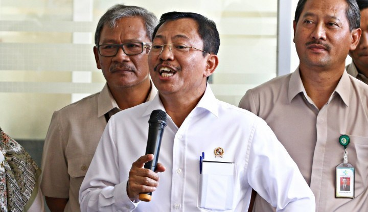

'Hadiah' Bintang Jasa Jokowi Mengguncang Independensi Hakim MK?
Menteri Kesehatan Terawan Agus Putranto belum bisa memastikan berapa harga vaksin Covid-19. Untuk pengadaan vaksin, Terawan mengatakan, akan menggandeng BPKP, LKPP, hingga KPK. "Harga kami koordinasikan apa yang paling feasible bersama BPKP, LKPP dan dengan KPK kalau perlu," ujar Terawan dalam rapat dengan Komisi IX DPR RI, Selasa (17/11). Terawan menyebut, kerjasama itu supaya pengadaan vaksin tidak terjadi penyelewengan. "Kita harus konsolidasikan berapa paling layak supaya kita berada dalam jalur pengadaan yang benar," jelasnya.
Sementara, Wakil Menteri BUMN Budi Gunadi Sadikin yang mewakili Komite Penanganan Covid-19 dan Pemulihan Ekonomi Nasional (PEN) menjelaskan, kepada Komisi IX DPR, penetapan harga dari vaksin Covid-19 seluruhnya berada di kewenangan Komisi IX.
Terawan sendiri belum bisa menjelaskan lebih jauh grand design realisasi vaksin Covid-19 kepada DPR. Sebabnya, hingga hari ini pemerintah belum menerima vaksin. Dia belum menyampaikan karena realisasi vaksin masih berupa rencana. Terawan belum mau bicara mengenai anggaran dan sebagainya. "Kita menunggu dulu nanti kejelasan karena semua berbasis bukti atau fakta. Itu selalu saya ingatkan karena nanti juga akan menyangkut anggaran dan bagaimana realisasinya supaya tidak salah. Kita beli sesuatu harus kita pertanggungjawabkan juga," kata Terawan.